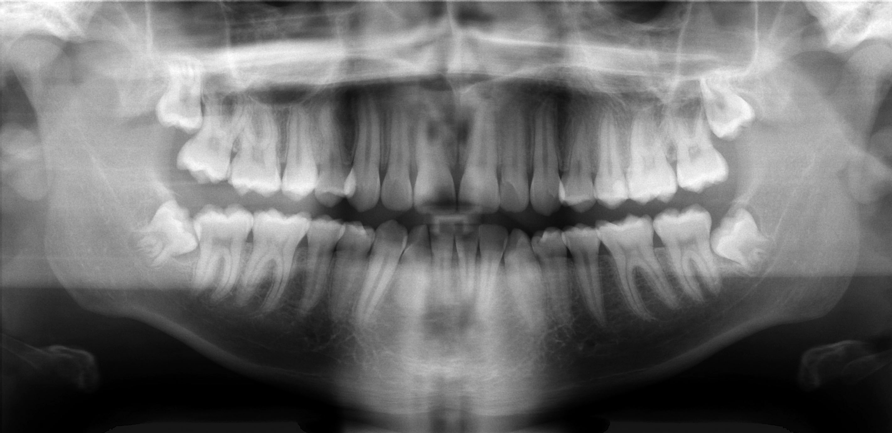

Выберите 38 или 48 на снимке
Экспериментальная оценка
Зуб 48: высокая предполагаемая сложность
Простое
8%
Среднее
27%
Сложное
65%
Что повлияло на оценку
- Ожидается результат детектора
Результат появится здесь
Сначала выберите зуб и укажите свой прогноз.